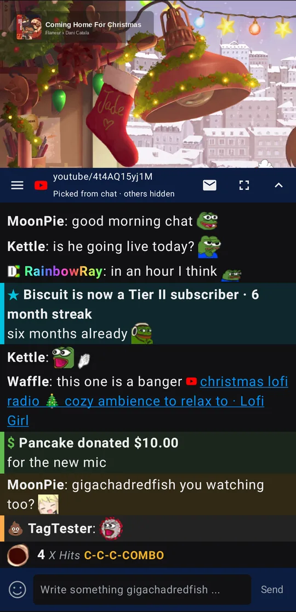

Glorp
destiny.gg chat and bigscreen on your Android phone: everything the site's chat does, streams in a proper video player, and a few things of its own.
Free, Android 8 or newer. An unofficial community app, not made by or affiliated with destiny.gg or Destiny.




Everything chat does on the site
Glorp follows the site's own chat code, so chat looks and works the way it does on destiny.gg.
- Emotes, animated, with combos and the effects emotes have next to each other; flairs and name colours, Tier 5's moving rainbow included
- Mentions, highlight words, tags with notes, the ignore list, timestamps in your own format
- Whispers, with your conversations and their history
- Polls you can vote in, the pinned message, spotlighted messages
- Subscriptions, gifted subs, donations, deaths, posts from X and the Vestaboard, as chat shows them
- Muted and banned users' messages censored, NSFW and NSFL hiding, mod notices
- The site's commands,
/stalk,/mentionsand/tagincluded, with suggestions as you type - Link previews and emote cards, favourite emotes, and the eye button's same-stream dimming
- Your chat settings follow your destiny.gg account, and the site sees what you're watching
Better on a phone
- A real video player for Kick, Twitch, YouTube and AngelThump: a quality menu, picture in picture, sound with the screen off, and a few seconds from live, close to the site
- Notifications when Destiny goes live, when you're mentioned, and for whispers, without keeping chat open
- Warnings before you send a message that would hit a nuke, mutelinks or a banned phrase
- The community's tools built in: chat log search (rustlesearch.dev), the poll archive and movie nights
- Titles for YouTube and Rumble links in chat, instead of bare addresses
- Easy on battery and memory: chat only connects while the app is on screen, and only what you see is drawn
- Updates itself from its releases, and a Report a problem button that writes the report for you
Glorp's own
- Themes: Glorp's own, and Aerith's light and dark themes for the site
- Name icons: an emoji before someone's name, a private tag only you see
- Chat from other streams: dim it like the site's eye button, or hide it altogether
- Text size and font: your phone's font or the site's
- Your latest mention stays in view until you've read it, and your own alert words warn you before sending
- Destiny's stream on the platform you like when he's live on several
- Test versions to try what's next, as Glorp Probe
Install
Download the APK from the latest release on your phone and open it. Android asks once to let your browser install apps.
Or add
https://github.com/StrawWaffle/glorpto Obtainium.Glorp checks for new versions itself and offers them at the top of its menu.
Signing in
destiny.gg's login page can't run inside an app (Twitch, Kick and Google block it), so Glorp signs in two ways:
- From a computer, for everything: copy two values from your browser into Glorp's sign-in page and scan the code it shows. Nothing is sent anywhere.
- A login key from your account's developer page, for chat and whispers.
Logins stay on your phone, encrypted.